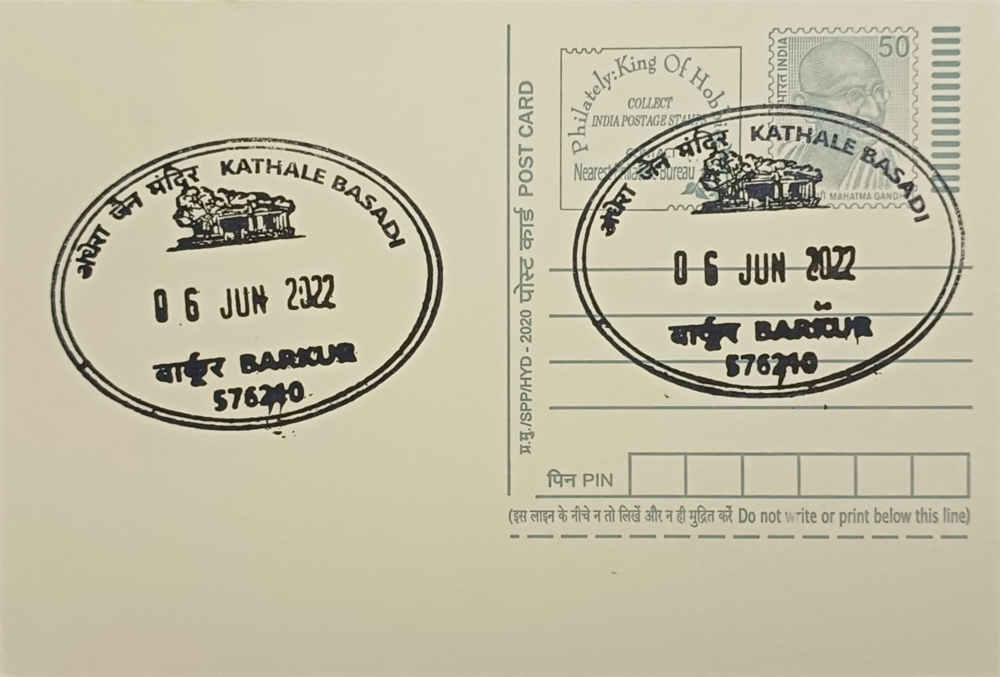

Kathale Basadi
ಕಠಾಳೆ ಬಸದಿ


Kathale Basadi, also rendered Kattale Basadi, takes its name from the Kannada and Tulu word "kattale" (or "kathale"), meaning darkness, a reference to the unusually enclosed form of the shrine itself rather than to any legend of origin. Unlike open-mandapa temples common across coastal Karnataka, the structure is walled and roofed on nearly every side, with a single small entrance serving as its only source of natural light, so that the inner sanctum remains in near-permanent dimness even by day. This architectural peculiarity, rare among the region's Jain monuments, gave the shrine its popular descriptive name long before any formal inscriptional record of its construction survived.
The basadi stands within Barkur, a settlement in Brahmavara taluk of Udupi district that served as the historic capital of the Alupa dynasty and later as a provincial administrative centre under the Vijayanagara empire. Tradition holds that Barkur once contained as many as 365 shrines, earning it the epithet "Nithyotsavada Nadu", the land of perpetual festival, of which only a few dozen survive today. Kathale Basadi is counted among this depleted but historically dense temple landscape, and its significance rests less on scale than on its status as a protected national monument under the Archaeological Survey of India, placing it alongside a small number of Jain structures in the district formally recognised for conservation.
Architectural and epigraphic assessments date the basadi's construction to between the eighth and twelfth centuries CE, attributing its establishment to patronage under the Alupa rulers who governed Tulu Nadu from Barkur during that period. The complex is arranged around a courtyard entered past a monolithic stone pillar roughly twenty feet in height, likely a victory or commemorative column of the kind often raised before Jain basadis in the region. The sanctum, or prangan, is enclosed by stone walls topped with sloping stone eaves, and the temple follows a navaranga hall plan rather than the gopuram-crowned Dravidian style typical of larger South Indian temples, reflecting the comparatively restrained architectural vocabulary that coastal Karnataka's Jain builders favoured.
A distinguishing feature of the Kathale Basadi complex is its juxtaposition of faiths within a single enclosure: the Jain shrine stands at the front of the courtyard, while two Hindu shrines, one dedicated to Shiva and another housing Vaishnava and Nagakali (serpent-deity) worship, occupy the rear of the same compound. This arrangement, uncommon even among Tulu Nadu's many basadi sites, has been read by historians as physical evidence of the religious coexistence that characterised Barkur during its centuries as a trading and administrative capital, when Jain merchant and ruling elites shared sacred space with Hindu Shaiva and Vaishnava communities rather than maintaining entirely separate temple precincts.
Much of the original carved ornamentation on the complex's walls and pillars has eroded or been lost, and the shrines today stand substantially in ruins, with no entry fee charged and no fixed visiting hours, unlike more actively managed pilgrimage sites elsewhere in Udupi district. The Archaeological Survey of India's listing nonetheless keeps the site under formal protection alongside other Barkur-area monuments such as the nearby fort remains and Someshwara temple complex, which together form the core of present-day heritage tourism in the town. Local and conservation-minded visitors continue to treat Barkur's cluster of ruined temples, Kathale Basadi included, as a single open-air historical precinct rather than isolated attractions, walked as a circuit by those tracing the vanished city of 365 shrines.
| Date of Introduction | January 17, 2015 |
|---|---|
| Address | Sub Postmaster, |
| Barkur SO, | |
| Udupi (dt.), Karnataka - 576210. |